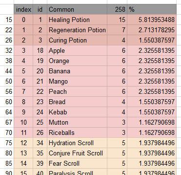

Project Roguelike: Randomized Loot Drops
Recent Events
I had intended to put up another blog post earlier in August, but I got sidetracked with other things like job hunting and Fallout: New Vegas. Ironically, it was about procrastination and pre-production... It'll likely be the very next blog post (#10). Anyway, I was commissioned to make a new game using RPG Maker MV, and it is just about to go into production. It has a fairly standard high fantasy setting with elves, orcs, dwarves, light versus dark, etcetera - a setting which I have always wanted to eventually try. My previous games Gate of Providence and Pestilence Stirs were more low fantasy. Since it's a commissioned game, it gets to "cut in line" when it comes to my projects. More information on this project in a future post!
In the meantime, here is an update to the roguelike game I've been working on/off. I got inspired to continue since I saw that people have been asking about how to make roguelikes in RPG Maker on various forums, and showing my video as an example that it can be done. Apparently, it's one of the top results if you search "rpg maker roguelike". I've decided to tackle the random item drop element for now.
Random Loot - Planning
The Random Loot system needs to have:
- Weighted Rarity: Some items should appear more frequently than others.
- Individual Graphics: Players should be able to tell what the item is before picking it up.
- Random Locations: Items should spawn and automatically be placed randomly in the level.
Saba Kan's Random Dungeons, the heart of the project, has options to generate random, duplicated events like chests. However, it is not suitable for this project as I need it to have Individual Graphics.
I use a script by Tsukihime called Map Drops to handle discarding items. It is also possible to make an item spawn anywhere on the map. However, items dumped on the ground using this script do not show up on the minimap. I decided that another method would be needed for the random items found in the dungeon, and chose to use events, which did show up on the minimap. (A mistake.)
But first, to have loot drop, there needs to be a list of loot - a loot table.
Loot Tables
This probably took the longest time because I needed to finalize the items that would be in the game. After I did that, I put them in a spreadsheet and set up the item weights.

Here you can see six columns:
- Weight Sums: Used to determine the sum of the weights in order for my loot algorithm to work.
- Array Index: The index of the item array. Only there for convenience.
- Item ID: The item ID in the database in RPG Maker.
- Item Name: The item itself.
- Weights: Likeliness of getting that item relative to the other items in the loot table. "Healing Potion" has a weight of 15 and thus is more than twice as likely to show up than "Regeneration Potion".
- Percent Chance: Chance of getting that item. Only there for convenience.
Loot Algorithm
The algorithm will accept an array of Weights Sums and an array of Item IDs, both the same size, and in sorted order according to the Array Index in the loot table. A random number between 1 to n, inclusive, where n = Sum of All Weights, is generated. Then, find the last weight in the Weight Sum Array that greater than or equal to the generated number. Since the arrays can get pretty large, I use Binary Search to quickly find the right item. Use the index of this weight to check the Item IDs Array for the item to spawn. (For example, a roll of 14 or 15 gives a "Healing Potion", but a 16 would give a "Regeneration Potion".)
If any of the values in the arrays need to be changed, a Find+Replace combined with a regular expression can be used to turn the rows of numbers from the spreadsheet into something that can be put into the script box.
Another random number generator can be used to determine which loot table to pick from.
First Attempt - Fully Evented
Now that I can select an item in the database by using the algorithm, it's time to make the item show up as an item that can be picked up.
My first attempt was to use events to take advantage of event pages. This lets me have Individual Graphics (by selecting a graphic for the event page) and Random Locations (the dungeon script randomizes event locations automatically). The correct event page would be chosen by having a variable that is changed according to the item. Plus, it works with the minimap, displaying item locations correctly! Then, after the event is done, it can just be copy and pasted multiple times. This fulfills all the conditions needed! Great! Right?
After making one of the event, I realized how bad it was. If I were to copy and paste this event, I would have to go through ALL the pages to change the variable for the page condition, and any other change will also require manual labor. This would be a huge effort, since there could be almost a hundred items in a drop table. (And events can only support 99 pages anyway.) This sort of looping behavior is best left for the machine to do.
Second Attempt - Using Map Drops
Finally, a more sensible approach. While the eventing system of RPG Maker is very powerful, using Ruby scripts is simply more effective when it comes to something like this. While I should have thought of this earlier (or left out the eventing bit entirely), I wrote about it in case any readers who are doing something similar considers an evented solution.
This approach uses the already existing system, Map Drops, to put items onto the map. Map Drops already has Individual Graphics based on the database (which is also dynamic, a big plus) and the algorithm covers Weighted Rarity. We just need to get the items to get Random Locations and have them show on the minimap.
Some digging later, I find the function that puts an event to a random place, and have the Map Drops script call it. Now items are in a random location, and everything is good. Problem solved, except...
The Pesky Minimap
Using Map Drops means that I can fill the map with loot if I wanted to. However, the minimap problem, where items spawned by Map Drops do not appear on the minimap, still exists.
After making sense of the minimap code and experimenting with the debug options, I found out that minimap script considers Map Drop items to be "erased". This is because Map Drop items don't have a character graphic, since it takes graphics from the Iconset. The minimap script checks for "erasure" by seeing if the character graphic is null (like if you select (None) as the graphic), or if it was erased by the event command "Erase Event". I added a line to exclude Map Drop items from erasure by checking for event name.
Map Drop items started to show up on the minimap! But now, if the item is picked up, it doesn't disappear from the minimap - except if you open the menu and close it, then it disappears! After some more investigating, I managed to get the sprite disposed by copying one of the clear functions into clear_sprites, which is like clear but doesn't delete the minimap. This function will be called in update so it is constantly run. Then I have the item set a boolean upon pickup, which makes clear_sprites only run when the boolean is true, thus removing the impact on framerate.
Results
Here are the results: one demonstrating item spawning and randomization, and one demonstrating it working inside a dungeon.
Item Spawning and Looting Them
Look at all that loot! You can also see that I've picked some of it up already. Sometimes items get stacked under each other, but I'm not sure if that will be a problem yet. The game starts to drop some frames when there are so many events on the screen, but this situation isn't one that would realistically happen in-game.
Dungeon Items
Some items have spawned in this room. I grab the "Banana" and "Scroll of Teleportation". Notice that the green dots that were once on the minimap have disappeared. The "Lockpick", which I left untouched, is still there.
Video
Here is the item spawning in video form. You can see me spawn a ton of items and then run around picking them up. There's also a brief sneak peek of the updated character creation screen in the beginning of the video.
If you enjoyed reading this post, feel free to follow us on Twitter to get updates on our games and blog posts!